Background available on the course website, lecture 3.3
Preparation
View code
## === Load libraries ===library(tidycensus)library(janitor)library(tidyverse)library(gghighlight)## === Source API key ===# this will execture everything in a file, loading it into our environmentsource(here::here("week3", "KEYS.R"))census_api_key(censusKEY)## Read in data ===lyme <-read_csv(here::here("week3", "data", "LD-Case-Counts-by-County-01-20.csv"))
Wrangling
Data wrangling and creating summary statistics
View code
# ========== lyme data ===========lyme_clean <- lyme %>%# standard name clean, lower snake case clean_names() %>%# rename columns (new = old)rename(county = ctyname,state = stname,status = ststatus) %>%# pivot data, long to wide.pivot_longer(cols =6:25, #cols to pivotnames_to ="city_year", values_to ="reported_cases") %>%# remove string from city_year, so only numeric year is in colmutate(year =str_remove(city_year, pattern ="cases"),year =as.factor(year))# calculate total bases per state (summary stats) ---lyme_by_state <- lyme_clean %>%group_by(year, state) %>%summarise(total_cases =sum(reported_cases))# ========== population data ==========# get population estimates by state using `get_estimates`us_state_pop <-get_estimates(geography ="state", product ="population",state =NULL, year =2019) %>%filter(variable =="POP") %>%select(state = NAME, population = value)# save data to csv (useful for working offline)write_csv(us_state_pop, file = here::here("week3", "data", "us_state_pop.csv"))## ========== joining data ==========lyme_pop <-left_join(lyme_by_state, us_state_pop) %>%#add col with number of 100k people per statemutate(pop100k = population/100000) %>%#calculate No. cases per 100k people (common for reporting disease)mutate(cases_per100k = total_cases/pop100k)
Visualization
Line plot
Basic line plots and applications of gghighlight. For any of these, adding geom_point afterwards can add points to the lines.
# create sphaghetti plot of cases over year for different stateslyme_pop %>%filter(year %in%c(2010:2020)) %>%ggplot(aes(x = year, y = cases_per100k, group = state)) +geom_line() +labs(title ="Sphaghetti Plot - All States Unlabeled")
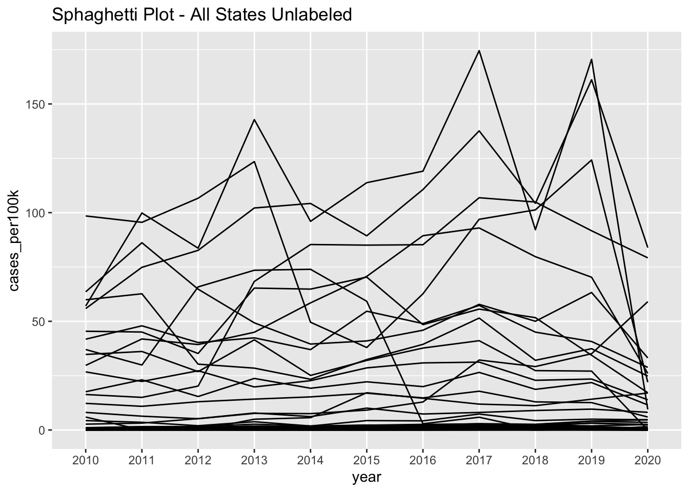
Not official plot, just a name for a messy line plot. Avoid theme
View code
# create a better plot that highlights a state of interestlyme_pop %>%filter(year %in%c(2010:2020)) %>%ggplot(aes(x = year, y = cases_per100k, group = state)) +geom_line() + gghighlight::gghighlight(state =="New Jersey") +#highlight single statelabs(title ="Highlight a Single Group")
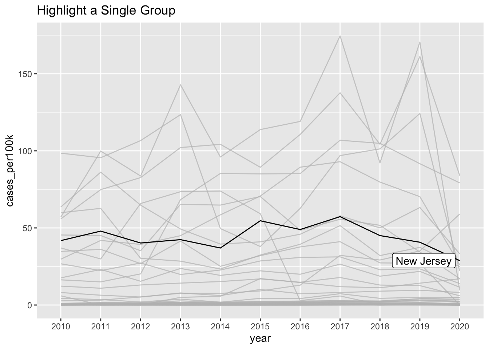
View code
# update all colorslyme_pop %>%filter(year %in%c(2010:2020)) %>%ggplot(aes(x = year, y = cases_per100k, group = state, color = state)) +geom_line() + gghighlight::gghighlight(max(cases_per100k) >100) +#highlight using conditionallabs(title ="Highlight Based on a Conditional")
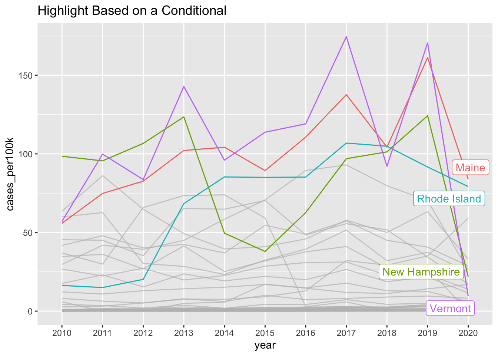
Additional considerations:
Choosing the axis for line plots can be more flexible, it does not need to start at 0
ggplot will select the best axis parameters based on your data
Aspect Ratio
aspect ratio is also automatically set by ggplot
impact perception of slope, so be sure to choose appropriately to avoid misleading plots
e.g. if there value of x is wide, widening the aspect ratio can improve readability
Created a line plot, allowing ggplot to set the aspect ratio
View code
lyme_pop %>%filter(year %in%c(2013:2019)) %>%filter(state =="Vermont") %>%ggplot(aes(x = year, y = cases_per100k, group = state)) +geom_line()
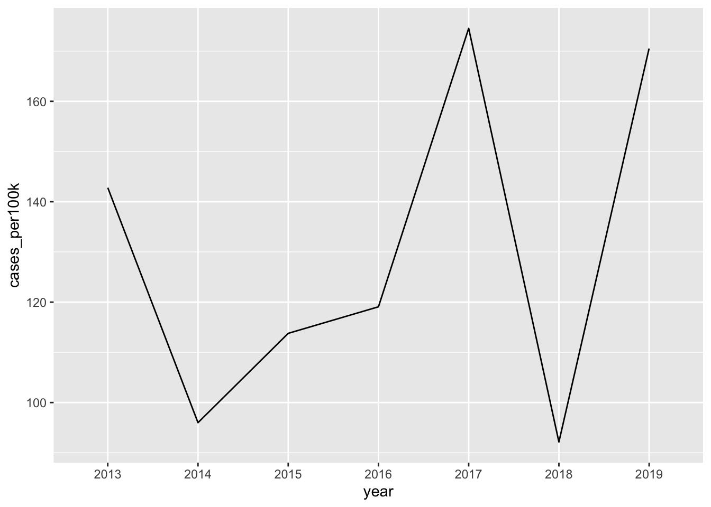
Adjust aspect ratio to 1
View code
lyme_pop %>%filter(state =="Vermont") %>%filter(year %in%c(2010:2020)) %>%ggplot(aes(x = year, y = cases_per100k, group = state)) +geom_line() +scale_y_continuous(breaks =seq(0, 190, by =1)) +coord_fixed(ratio =1) #adjust aspect ratio
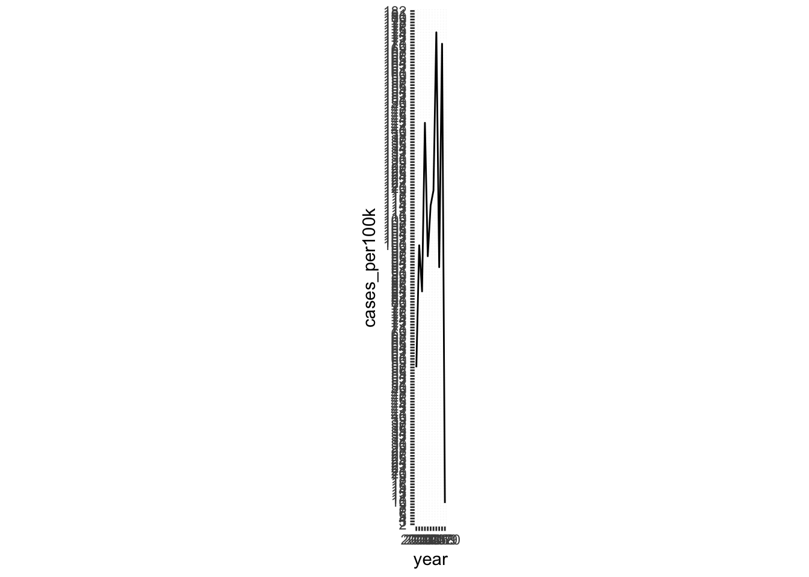
Recall that the ratio is based on the value of y/x
View code
lyme_pop %>%filter(state =="Vermont") %>%filter(year %in%c(2010:2020)) %>%ggplot(aes(x = year, y = cases_per100k, group = state)) +geom_line() +scale_y_continuous(breaks =seq(0, 190, by =1)) +coord_fixed(ratio =1/50) #adjust aspect ratio
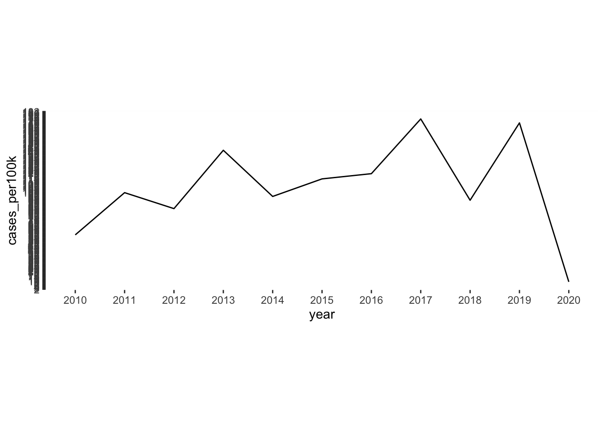
Area Plot
Area plots are similar to a line plot, but filled in. They can be aesthetically pleasing, but can be less clear than line plots. Later we’ll talk about the “data-ink” ratio, which defines some useful guidelines for fill/color in data visualization.
lyme_pop %>%filter(year %in%c(2010:2020)) %>%filter(state =="New Jersey") %>%ggplot(aes(x = year, y = cases_per100k, group = state)) +geom_area()
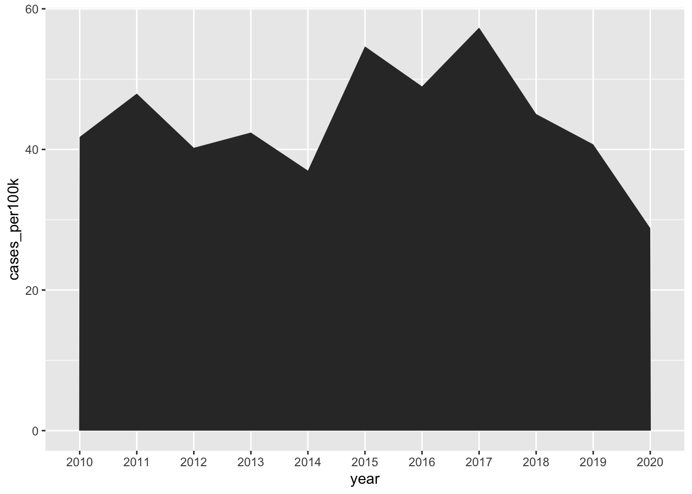
View code
lyme_pop |>filter(year %in%c(2010:2020)) |>filter(state =="New Jersey") |>ggplot(aes(x = year, y = cases_per100k, group = state, fill = state)) +geom_area() +scale_fill_manual(values =c("lightslateblue")) +theme(legend.position ="none")
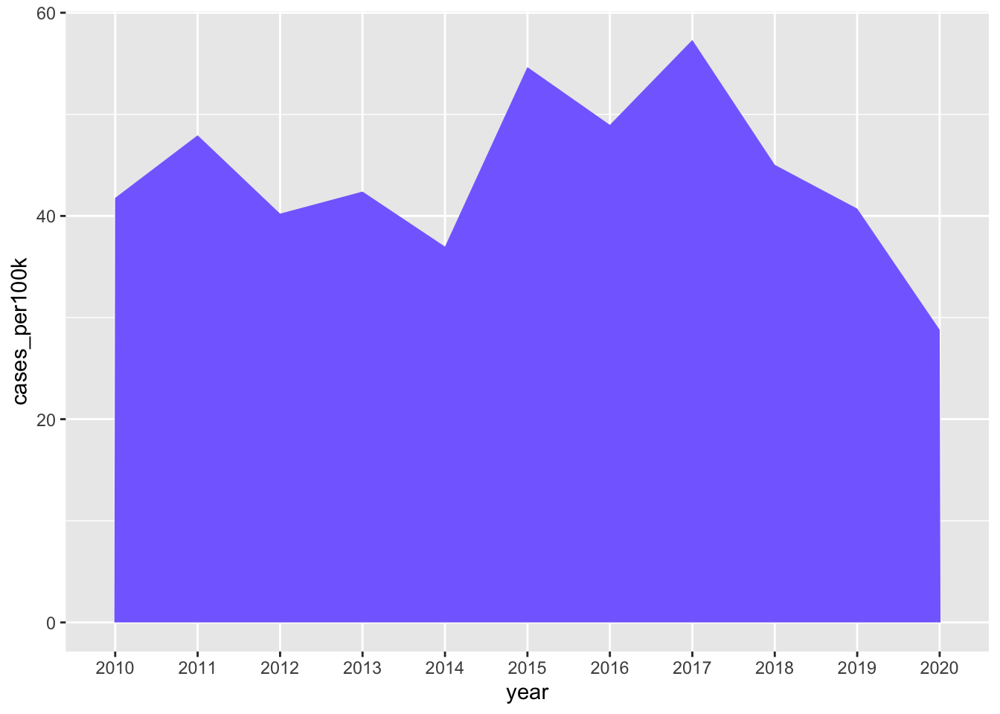
View code
lyme_pop |>filter(year %in%c(2010:2020)) %>%filter(state =="New Jersey") %>%ggplot(aes(x = year, y = cases_per100k, group = state, fill = state)) +geom_area() +scale_fill_manual(values =c("lightslateblue")) +scale_x_discrete(expand =c(0, 0)) +scale_y_continuous(expand =c(0, 0)) +theme(legend.position ="none")
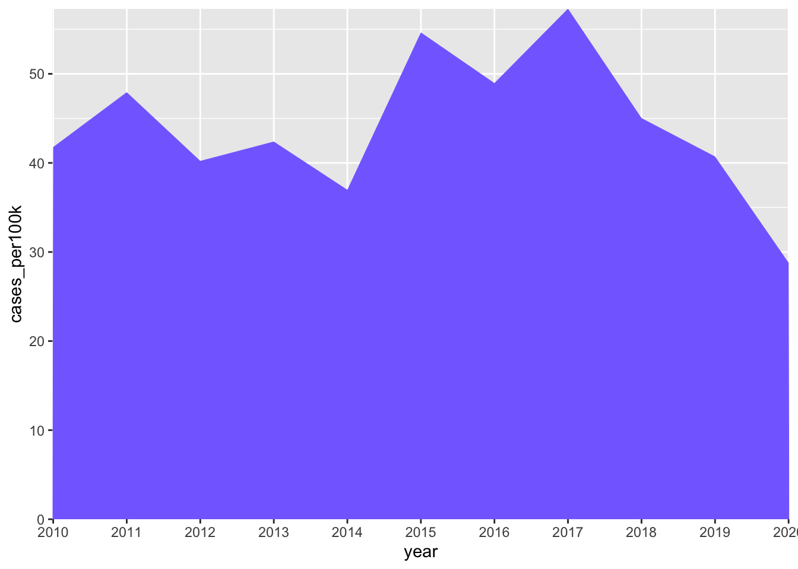
Using scale_x_discrete expands it in the x-direction and removes the empty buffer space on the side. Similarly scale_y_continuous allows it to take up the full space in the y-axis.
View code
lyme_pop %>%filter(year %in%c(2010:2020)) |>filter(state %in%c("Maine", "Rhode Island", "New Hampshire", "Vermont")) %>%ggplot(aes(x = year, y = cases_per100k, group = state, fill = state)) +geom_area()
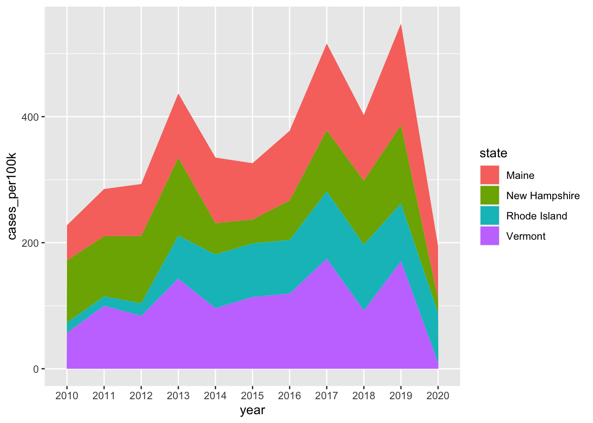
Group and fill by state
Additional considerations:
Easy to misinterpret
Useful for comparing groups
still misleading, since the group in the background looks the largest
ordered alphabetically
Proportional Area plot
This plot can be easier to interpret then a stacked area plot. Instead of having the value of y as the y-axis, it uses a proportion. This makes it easier to compare groups with visualization (no subtraction needed).
View code
lyme_pop %>%filter(year %in%c(2010:2020)) %>%filter(state %in%c("Maine", "Rhode Island", "New Hampshire", "Vermont")) %>%ggplot(aes(x = year, y = cases_per100k, group = state, fill = state)) +geom_area(position ="fill") +# adjust labels using the scales packagescale_y_continuous(labels = scales::label_percent(scale =100))
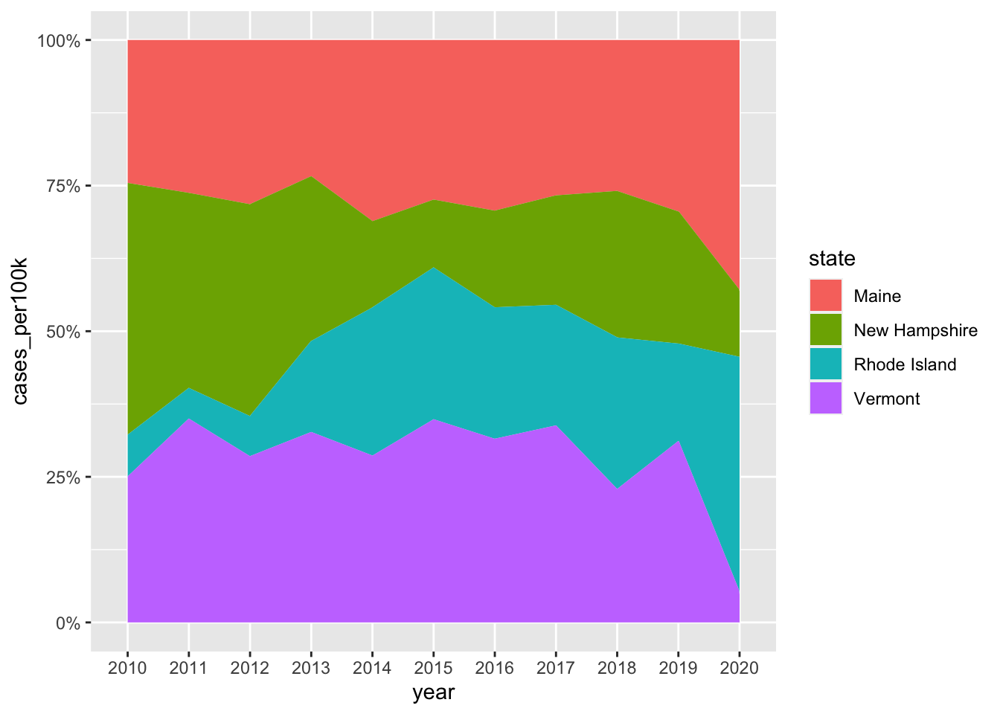
Line vs. Area plot
For this data specifically, a line plot ends up being the best option (in my opinion). Still, the final choice depends on the data and what you’re trying to illustrate.
View code
lyme_pop |>filter(year %in%c(2010:2020)) |>filter(state %in%c("Maine", "Rhode Island", "New Hampshire", "Vermont")) |>ggplot(aes(x = year, y = cases_per100k, group = state, color = state)) +geom_line() +facet_wrap(~state) +theme_minimal()